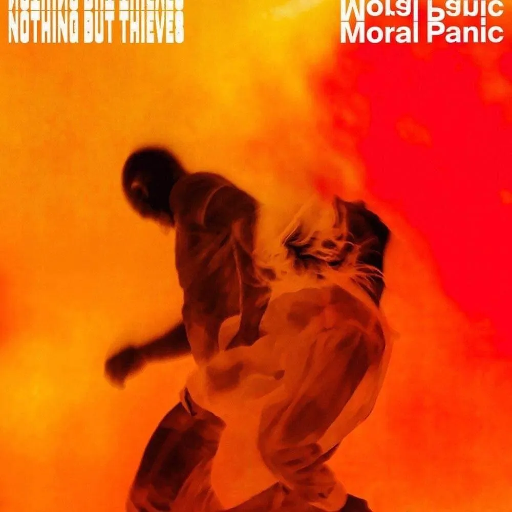

Nothing But Thieves - Impossible
잔잔하게 시작해 점점 고조되는 멜로디는 마치 감정을 꾹 눌러 담다가 결국 터져버리는 순간을 표현하는 듯하다.
특히 후반부의 강렬한 보컬은 상실, 후회, 그리고 되돌릴 수 없는 관계에 대한 깊은 감정이 전달된다.
가사에서는 이미 끝나버린 관계를 붙잡고 싶지만, 그것이 불가능하다는 사실을 인정해야 하는
복잡한 감정을 담고 있다. 사랑했던 기억과 그리움이 남아 있음에도 불구하고,
다시 돌아갈 수 없다는 현실을 받아들이는 과정이 인상적이다.